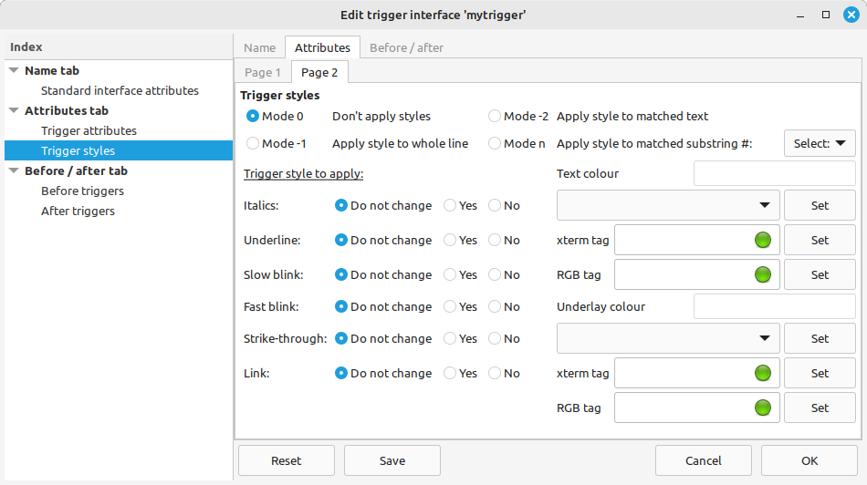
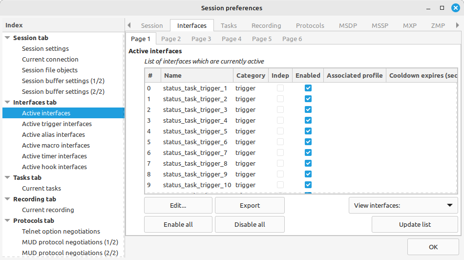

The quickest way to create a trigger, alias, macro, timer or hook is from the main window menu.
We'll start with triggers. Click on Interfaces > Triggers > World triggers and this window will appear.
All interfaces have a stimulus and a response.
A trigger uses a pattern as a stimulus. When Axmud receives a line of text that matches the pattern, we say that the trigger fires. After the trigger fires, it can send a world command in response.
Triggers are highly customisable. Select mytrigger by clicking on it, and then click the Edit button.
The new edit window contains three tabs. The Name tab allows you to change the trigger's stimulus and response, and also allows you to enable or disable the trigger.
The Attributes tab allows you to customise the trigger - for example, to make matching lines disappear from view, or to disable the trigger automatically after the first match.
When Axmud is testing triggers against a line of text, it checks the triggers in the same order each time. Sometimes the order is important, so the Before / after tab allows you to name the triggers that should be checked before or after this one.
Click on the Attributes tab.
We'll talk about rewriter triggers in Section 7.1.4 and splitter triggers in Section 7.1.6. First, let's examine the other attributes.
Igore the trigger response (e.g. just apply a style)
When this checkbutton is selected, nothing happens when the trigger fires (but any trigger style is still applied - see Section 7.1.3.
Ignore case
When the checkbutton is selected, this trigger doesn't care about capital letters. So, the pattern You kill the orc will match all of the following lines:
you kill the orc
You kill the orc
YOU KILL THE ORC
From your reading of Section 6 you'll remember that patterns are usually case-sensitive. De-select the button to make the pattern You kill the orc match only the first line above.
Keep checking triggers after a match
If the checkbutton is not selected, when this trigger's pattern matches a line, Axmud will not check any other triggers. If the checkbutton is selected, Axmud will continue checking the line against other triggers.
Only fire in session's default pane
A pane is an area of an Axmud window containing (multiple lines of) text. Most windows, including the main window, contain only one pane by default. Text received from the world is displayed in the main window's single pane by default.
When the checkbutton is selected, the trigger only applies to text received from the world and displayed in that default pane. When it's not selected, the trigger applies to text received from the world and displayed in any pane (including in other windows).
Fire in named pane
One way to create multiple panes is to use scripts, including plugins, tasks and Axbasic scripts. Tasks, in particular, often create their own task window(s) which can contain one or more panes.
Another way is to allow MUD protocols such as MXP and Pueblo to create multiple panes.
In such cases, the pane is often (but not always) given a name. If so, the trigger can be applied only to text received from the world and displayed in that pane.
Require a prompt to fire
Most lines received from the world end with an (invisible) newline character. The character means the next piece of text should be displayed on a new line.
A prompt is a line that doesn't end with a newline character. Typical prompts include:
What is your name?
Enter your password
Axmud waits a short time (typically half a second) before deciding that a line of text is a definitely a prompt. After that, the trigger will fire if the checkbutton is selected and if the pattern matches the line.
Require a login to fire
When you first connect to a world, you will often see graphics and other unusual text, which can cause your triggers to behave in unexpected ways. To avoid this problem, you can select this checkbutton, after which the trigger won't fire until your character is marked as logged in.
Omit (gag) from output
When the checkbutton is selected, any line which matches the trigger's pattern is not displayed in the main window.
Omit (gag) from logfile
When the checkbutton is selected, any line which matches the trigger's pattern is not written to any logfiles.
Temporary trigger
If the checkbutton is selected, the trigger only fires once. After that, the active trigger becomes an inactive trigger - it will be available again, the next time you connect to the world, but it will not be available again during this session.
Cooldown (in seconds)
You can prevent a trigger from firing too often by setting a cooldown period. For example, if you set the cooldown to 10, after firing the trigger won't be able to fire again for another 10 seconds. The default value is 0, meaning no cooldown period is used.
Now click on Page 2 of the Attributes tab.

Triggers are able to change the way matching lines are displayed. This is really useful if you want to change the colour of The orc drops its treasure, so that it stands out against the surrounding text.
Trigger styles are turned off by default. When you turn them on, you need to decide whether the new style should apply to the whole line, or just the portion of the line that matches the trigger's pattern.
If the trigger's pattern contains groups (see Section 6.1.5), you can also apply a style just to that portion of text. For example, if you use the pattern You have (.*) gold coins, which matches the line:
You have 100 gold coins
...you can draw attention to the 100 by clicking on Mode n, then selecting the number 1 (meaning, the substring matching the first group in the pattern) in the box just below.
The trigger style can combine colours and other typographical features. Foreground colour is the colour of the text itself. Underlay colour is the colour of the background immediately below the text. (Bold colours are shown in CAPITAL LETTERS). If you don't specify a colour, the line's normal colours are not changed.
You can also apply italics, strikethrough, blinking text and underlines (underscores). If you apply the link style, the text will be a clickable link which Axmud will try to open in a web browser.
Axmud triggers have a stimulus and a response. If you just want to apply the style and do nothing else, you can tell Axmud to ignore this trigger's response.
All interfaces have a stimulus and a response. Most triggers have a pattern (stimulus) and an instruction (response), but there is a special class of trigger called a rewriter trigger.
For rewriter triggers, the text matching the pattern is substituted for the text of the response.
Rewriter triggers are often used to filter out coarse and injudicious language, so we'll use that as an example.
Now, any received text which matches the pattern is modified, so that the scurrilous expletive is replaced by asterisks.
Gandalf says 'Oh, ****!'
Rewriter triggers can use substrings.
For example, suppose you want Axmud to convert a long string, containing lots of useless characters, into a shorter string containing only the important characters:
And the winner is ========== Gandalf ==========
You could use a pattern like this:
And the winner is ========== (.*) ==========
...which would match the line above, as long as it contained exactly the right number of = characters. However, let's assume that the number is variable, and use this pattern instead:
And the winner is =+ (.*) =+
(Section 6.1.4 explains that + means one or more of the previous characters, in this case, one or more = characters.)
When the trigger fires, any part of the line matching the group (.*) is stored as a substring. In this case, the first substring contains the winner, Gandalf.
We can use the first substring in the substituted text by specifying the variable $1.
And the winner is $1
(If there is more than one substring, you can also use $2, $3 and so on.)
So now we're ready to create our trigger:
When the trigger fires, the text at the top of this Section will be converted to:
And the winner is Gandalf
There are a few things left to mention:
Substrings can be used in non-rewriter triggers, too.
In this example, we'll create a trigger that joins in any fight started by Gandalf. If he attacks an orc, the trigger fires and Axmud sends the world command kill orc.
The rules about literal double quotes, literal dollars and literal backwards slashes, mentioned just above, still apply.
At Imperian: Sundered Heavens, a room's verbose description and its exit list are usually on two separate lines, but occasionally they appear on the same line. This is confusing for the Locator task, on which the automapper relies, and can cause the automapper to lose its place.
The solution to the problem is to use a splitter trigger to split the line into two, when necessary.
(You don't need to read this Section if you want to play Imperian, because the pre-configured world profile already includes a suitable trigger. However, you should read this Section if you want to learn how to create your own splitter triggers.)
In Axmud terminology, the whole room description - including the title, verbose description, list of exits and the contents of the room - is called a room statement. A typical room statement at Imperian looks like this:
A quiet alcove.
This small alcove is a sanctuary of quiet reflection.
You see a single exit leading north.
The room statement consists of three lines - a title, a verbose description and an exit list. The verbose description is actually received as a single line - even when it's very long - but, depending on the size of the main window, it might be displayed as several lines.
Alas, some rooms at Imperian have a room statement that looks like this:
A neat storage room.
This small storage room is neatly stacked. You see a single exit leading south.
Here, the verbose description and exit list appear on the same line. Because the Locator task is expecting the exit list on a separate line, we need to split the second line into two, with one sentence on each line.
All triggers have a stimulus and a response. For splitter triggers, both of these are patterns. The simplest splitter triggers use the same pattern for both.
Now, the next time you type look at Imperian, you would see this:
A neat storage room.
This small storage room is neatly stacked.
You see a single exit leading south.
Splitter triggers usually split the line just before the portion that matches the stimulus pattern. Sometimes it's more convenient to split a line just after a matching portion of text. Here's an example using the same room statement.
The next time you look at the room, you would expect to see this:
A neat storage room.
This small storage room
is neatly stacked. You see a single exit leading south.
The examples in the previous Section use identical patterns for both the stimulus and response. Sometimes it's useful to use two different patterns. Here's an example using the same room statement, in which the verbose description and exit list are initially on the same line.
A neat storage room.
This small storage room is neatly stacked. You see a single exit leading south.
When Axmud tests a splitter trigger against a line of text, it uses the following process:
We can use this to our advantage: the stimulus pattern tells Axmud if the line should be split, the response pattern tells us exactly where it should be split.
Let's modify the existing trigger so that it splits a line containing You see a single exit leading, but only if it follows another sentence on the same line.
The next time you look at the room, you would expect to see this:
A neat storage room.
This small storage room is neatly stacked.
You see a single exit leading south.
This has been a trivial example; in fact, this more complex splitter trigger has exactly the same effect as the first one we created.
However, you can use more complex splitter triggers to split a line in situations that wouldn't be possible using a simpler version.
Aliases act on world commands such as kill orc or inventory. They don't act on client commands (see Section 4.2) or other kinds of instructions such as speedwalk commands (Section 4.4).
Aliases are generally used to make commands shorter. For example, if you frequently have to type a command like this:
get coins from corpses
...you can use an alias to reduce it to a command like this:
gcc
You can also reduce part of a command. If you frequently have to type a command like this:
put amazing red crown on head
...you can use an alias to reduce it to a command like this:
put arc on head
Like all interfaces, Axmud aliases have a stimulus and a response. The stimulus is a pattern. When you type a world command that matches the pattern, we say that the alias fires.
The response is some text. When the alias fires, the response is substituted for part of the original command (or replaces all of it).
You can now type the world command put arc on head; it should appear in the main window as
put amazing red crown on head
Aliases like these come with hidden dangers: the pattern arc also matches this command:
enter archway
If you type enter archway, the alias will fire, and the actual command sent to the world will be:
enter amazing red crownhway
...which is probably not what you intended!
For this reason, most of your aliases will use patterns which begin and end with the metacharacters ^ and $ (see Section 6.1.1 if you don't understand why).
Now, let's create a second alias.
This alias will only fire when you type the exact command gcc - it won't fire for any longer command which contains the string gcc.
Like triggers, aliases are also customisable. Select myalias by clicking on it, and then click the Edit button.
The new edit window contains three tabs. The Name tab allows you to change the stimulus and response, and also allows you to enable or disable the alias.
The Attributes tab allows you to customise the alias - for example, to disable the alias automatically after the first match.
When Axmud is testing aliases against a world command, it checks the aliases in the same order every time. Sometimes the order is important, so the Before / after tab allows you to name the aliases that should be checked before or after this one.
Click on the Attributes tab. There are four attributes which can be customised.
Ignore case
When the checkbutton is selected, this alias doesn't care about capital letters. In the examples above, amazing red crown will be substituted for all of the following world commands:
arc
Arc
ARC
From your reading of Section 6 you'll remember that patterns are usually case-sensitive. De-select the button to make the pattern arc match only the first command above.
(Although it's unlikely that you would want to distinguish between upper-case and lower-case world commands, the capability is available, if you should ever need it.)
Keep checking aliases after a match
If the checkbutton is not selected, when this alias's pattern matches a world command, Axmud will not check any other aliases. If the checkbutton is selected, Axmud will continue checking the command against other aliases.
Temporary alias
If the checkbutton is selected, the alias only fires once. After that, the active alias becomes an inactive alias - it will be available again, the next time you connect to the world, but it will not be available again during this session.
Cooldown (in seconds)
You can prevent an alias from firing too often by setting a cooldown period. For example, if you set the cooldown to 10, after firing the alias won't be able to fire again for another 10 seconds. The default value is 0, meaning no cooldown period is used.
Aliases, like triggers, can contain substrings.
For example, suppose you want Axmud to convert a world command like give 50 gc to orc to give 50 gold coins to orc. This is how to do it, so that the alias will work with any number of coins being given to any creature:
You can now test the alias by typing the world command give 50 gc to orc.
There are a few things left to mention:
Macros wait for you to press a key like F1, and then do something in response.
Like all interfaces, Axmud macros have a stimulus and a response. The stimulus is a keycode that represents one of the keys on your keyboard. When you press the key, we say that the macro fires.
The response can be any kind of instruction. It's usually a world command like get coins from corpse, but it could be a client command like ;openautomapper or any other kind of instruction (see Section 4.4).
A key part of Axmud's design is platform independence. If you install Axmud on one computer with Linux and on another computer with MS Windows, the data you save on one can be transferred to the without problems.
For this reason, Axmud uses a set of standard keycodes - short strings corresponding to every key on the keyboard. The keycode for each key is the same, regardless of which operating system you're using.
Axmud's keycodes - always in lower-case - are:
shift alt alt_gr ctrl num_lock
escape pause break insert delete return backspace space tab
home page_up page_down end
up down left right
f1 f2 f3 f4 f5 f6 f7 f8 f9 f10 f11 f12
grave tilde exclam at number_sign dollar percent
ascii_circum ampersand asterisk paren_left parent_right
plus minus equal underline
bracket_left bracket_right brace_left brace_right colon
semicolon apostrophe quote slash backslash pipe comma
full_stop less_than greater_than question_mark
There are also a set of keycodes for the keypad (the keys, normally on the right side of the keyboard, which are laid out like a calculator):
kp_0 kp_1 kp_2 kp_3 kp_4 kp_5 kp_6 kp_7 kp_8 kp_9
kp_add kp_subtract kp_multiply kp_divide kp_enter kp_full_stop
The keycodes 'full_stop' and 'kp_full_stop' represent the full stop/period keys. Axmud supports a number of alternatives to the standard keycodes, including 'period'. (Type ;listkeycodealternative for a list of alternative keycodes.)
Keycodes can be combined when two or more keys are pressed together. For example, CTRL + F1 corresponds to the keycode string "ctrl f1" (a string containing two words separated by a single space character).
Note that, for technical reasons, Axmud cannot use SHIFT or ALT-GR in macros (although ALT + SHIFT + some other key is acceptable). Therefore, if you try to add a macro that fires when you press SHIFT + F1, it won't work.
Like triggers and aliases, macros are customisable. Select mymacro by clicking on it, and then click the Edit button.
The new edit window contains three tabs. The Name tab allows you to change the stimulus and response, and also allows you to enable or disable the macro.
The Attributes tab allows you to customise the macro - for example, to disable the macro automatically after the first matching keypress.
When Axmud is testing macros against a keypress, it checks the macros in the same order every time. Sometimes the order is important, so the Before / after tab allows you to name the macros that should be checked before or after this one.
Click on the Attributes tab. There are two attributes which can be customised.
Temporary macro
If the checkbutton is selected, the macro only fires once. After that, the active macro becomes an inactive macro - it will be available again, the next time you connect to the world, but it will not be available again during this session.
Cooldown (in seconds)
You can prevent a macro from firing too often by setting a cooldown period. For example, if you set the cooldown to 10, after firing the macro won't be able to fire again for another 10 seconds. The default value is 0, meaning no cooldown period is used.
Timers allow you to execute an instruction repeatedly at regular intervals. They can also be used to execute an instruction once, after a certain period of time. They can even be used to execute an instruction once a day, at the same time each day (or once an hour, at the same number of minutes past the hour).
Like all interfaces, Axmud timers have a stimulus and a response. The stimulus is usually a time interval, expressed in seconds. The minimum value is 0.1 seconds. When this interval has passed, we say that the timer fires.
The stimulus can also a 24-hour clock time in the form HH:MM (for example, 00:00 for midnight, 12:00 for midday, 13:30 for half past one in the afternoon). If you use a clock time, the timer fires at the time, once a day.
Axmud recognises special clock times in the form 99:MM. For example, a timer whose stimulus is 99:00 will fire once an hour, on the hour. A timer whose stimulus is 99:15 will fire once an hour, at a quarter past the hour.
The response can be any kind of instruction. It's usually a world command like score, but it could be a client command like ;playsoundeffect beep or any other kind of instruction (see Section 4.4).
Let's create a timer which will fire every 60 seconds, and which sends the world command score each time it fires.
Like triggers, aliases and macros, timers are customisable. Select mymacro by clicking on it, and then click the Edit button.
The new edit window contains three tabs. The Name tab allows you to change the stimulus and response, and also allows you to enable or disable the timer.
The Attributes tab allows you to customise the timer - for example, to disable the timer automatically after it fires for the first time.
When Axmud is testing whether it's time to fire a timer, or not, it checks the timers in the same order every time. Sometimes the order is important, so the Before / after tab allows you to name the timers that should be checked before or after this one.
Click on the Attributes tab. There are several attributes which can be customised.
Repeat count
Some timers should continue firing indefinitely; others should only fire a certain number of times.
The repeat count sets how many times the timer fires, before disabling itself. You can use any positive integer value; alternatively, use the value -1 to make the timer repeat indefinitely.
Initial delay
Some timers should fire immediately, but usually you'll want the timer to fire for the first time after a delay.
If you use an initial delay of 0, an enabled timer fires as soon as it becomes active. Otherwise, it waits for the specified number of seconds before firing for the first time.
You will often set the repeat count and the initial delay to the same value, so that the timer fires (for example) 10 seconds after becoming active, then every 10 seconds after that.
Random delays
The timer's stimulus is an interval in seconds. If the stimulus is 10, the timer will fire every 10 seconds.
However, it's possible to introduce an element of surprise. When the checkbutton is selected, the delay is a random interval between 0 and the stimulus (10 seconds, in this case). Every time the timer fires, a new random interval is chosen - so the timer might fire after approximately 2 seconds, then 5, then 1, then 9.
(There is a minimum system delay, set to a 0.05 seconds by default. No timer can ever fire more frequently than that.)
Minimum random delay
Sometimes you will want to specify a random delay that's between 5 and 10 seconds, rather than being between (almost) 0 and 10 seconds.
When the random delay checkbutton is selected, this value sets the minimum random delay. Specify the value 0 to use the system's shortest possible delay.
Start after login
Select this checkbutton to prevent the timer firing before the character is marked is logged in. If you don't select the button, the automatic login process might be disrupted.
Temporary timer
If the checkbutton is selected, the timer only fires once. After that, the active timer becomes an inactive timer - it will be available again, the next time you connect to the world, but it will not be available again during this session.
Hooks respond to certain events.
An example of a hook event is the one called login. Every time Axmud completes an automated login - or every time the user performs a manual login with the ;login command - the hook event is deemed to have happened (and we say that the hook fires).
The response can be any kind of instruction. It's usually a world command like inventory, but it could be a client command like ;playsoundeffect beep or any other kind of instruction (see Section 4.4).
This is a complete list of Axmud's hook events.
Some hook events provide more information about whatever it was that caused the event to happen. This information, which is called hook data, is available to any code that needs it.
For the prompt and receive_text events, the hook data is the received text, with all the escape sequences (colour codes) removed.
For the sending_cmd event, the hook data is the world command that's about to be checked against aliases. For the send_cmd event, the hook data is the world command that's about to be sent to the world.
Other hook events don't use hook data at all.
In a moment we'll discuss how to create hooks that use hook data, but first we'll discuss how to create simple hooks that respond with an ordinary world command.
Let's create a hook which fires every time a world command is sent, and which plays a sound effect in response. Don't forget that sound effects won't work at all until you turn them on:
;sound on
;snd on
Now you can create the hook.
Like triggers, aliases, macros and timers, hooks are customisable. Select myhook by clicking on it, and then click the Edit button.
The new edit window contains three tabs. The Name tab allows you to change the stimulus and response, and also allows you to enable or disable the hook.
The Attributes tab allows you to customise the hook - for example, to disable the hook automatically after its hook event happens for the first time.
When Axmud is responding to hook events, it checks hooks in the same order every time. Sometimes the order is important, so the Before / after tab allows you to name the hooks that should be checked before or after this one.
Click on the Attributes tab. There are two attributes which can be customised.
Temporary hook
If the checkbutton is selected, the hook only fires once. After that, the active hook becomes an inactive hook - it will be available again, the next time you connect to the world, but it will not be available again during this session.
Cooldown (in seconds)
You can prevent a hook from firing too often by setting a cooldown period. For example, if you set the cooldown to 10, after firing the hook won't be able to fire again for another 10 seconds. The default value is 0, meaning no cooldown period is used.
A hook's response can be an ordinary world command, a client command (like the one we created earlier, which uses ';playsoundeffect') or any other kind of instruction.
Those instructions include Perl commands. As explained in Section 4.4, a Perl command is a mini-Perl programme, all on one line. The programme's return value is processed as a normal instruction such as a world command.
Let's create one of these hooks now. This hook will add the word sail before every world command. It will convert north into sail north or south into sail south. We'll be using the hook event sending_cmd. This hook event happens whenever you type a world command, but before the command is checked against aliases.
If you're familiar with the Perl language, it will be obvious how the mini-programme works. If not, it will be obvious how to modify the mini-programme - and you can use the same mini-programme with many other hooks.
Don't forget that Perl commands are disabled by default. This hook won't work until you enable them again.
The mini-programme - including the initial forward slash character which starts all Perl commands - looks like this:
/my $string = 'sail '; return $string . $hookData;
The mini-programme's job is to convert the hook data - a string of text - into a modified string of text. The modified string is the programme's 'return value'. The return value is sent as a world command.
Now you're ready to create the hook.
This particular mini-programme adds the word sail to every command, but you can change sail to any word you like.
If you'd prefer to add a word after the original command, instead of before it, you could use this mini-programme instead:
/my $string = ' axe'; return $hookData . $string;
This mini-programme could convert the command get into get axe, the command drop into drop axe or the command sell into sell axe.
Astute readers might now be asking themselves why there isn't an easier way to convert north into sail north automatically.
In fact, there are several possible methods, including the clever use of aliases. But a much easier way is to use Axmud's redirect mode.
;help redirectmode
Some users might want to create their own hook events. This is possible, though of limited use, since the only way to 'fire' the hook is with the ;simulatehook command. A custom hook event has no hook data.
Custom hook events must begin with an underline character, followed by an alphanumeric character, for example _myevent.
To create a custom hook event, you can just create a hook responding to that event, for example
;addhook -s _myevent -p ;about
As explained in detail in Section 5, Axmud interfaces (trigger, aliases, macros, timers and hooks) are either active or inactive.
You can create several triggers called mytrigger, each belonging to a different profile, but only one of them is active (actually in use). The others are inactive.
Actually, when an interface becomes active, Axmud makes a copy of it. The copy, not the original, is the active interface.
You can see a current list of active interfaces from the main window menu (click on Interfaces > Active interfaces). If the Status task is running, the list will look like this:

There is one more important thing to explain.
If you modify the original (inactive interface), the corresponding copy (active interface) is automatically updated.
However, if you modify the copy (the active interface), no changes are made to the original (the inactive interface). Any changes are therefore temporary and will disappear at the end of the session.
Everyone reading his guide will be familiar with copying and pasting.
In a text editor, you can highlight some text and press CTRL + C, before pressing CTRL + V to copy it to somewhere else. In between, the text is stored in some secret place in the computer's memory.
Axmud interfaces can also be copied from one profile to another, or even from one world to another. Axmud has a not-so secret clipboard which stores the interfaces waiting to be copied. This single clipboard is available to any session that's open at the moment.
Instead of copying and pasting, we talk about exporting to the clipboard and importing from it.